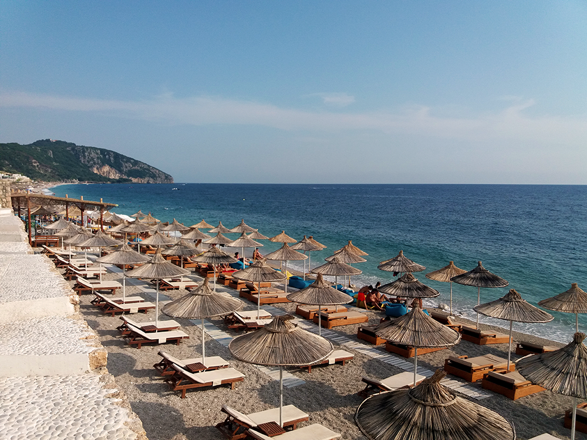
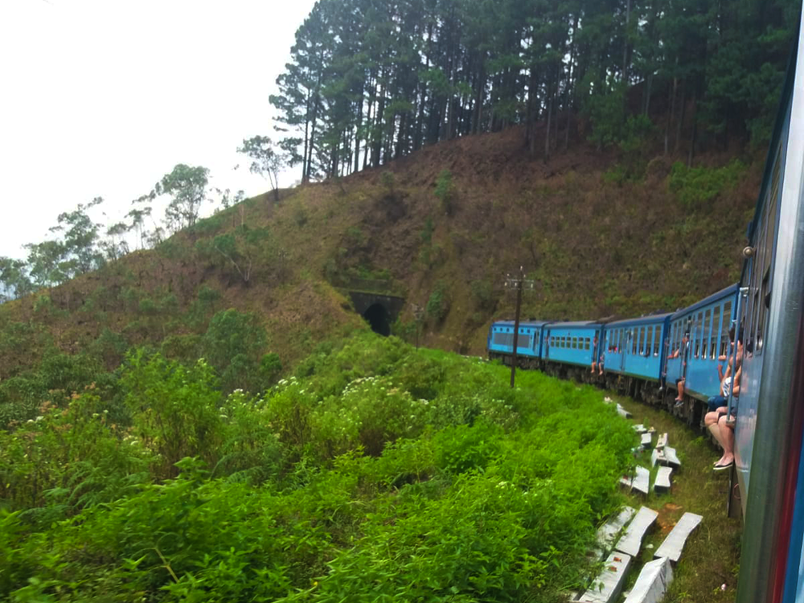

Hier vertel ik over de prachtige reizen die ik heb gemaakt, en nog ga maken.
Om te beginnen, hier alvast een foto uit IJsland.

Onontdekt Noord-Macedonië & Albanië: 8 redenen om deze Balkanparels te bezoeken
Gereisd in: Augustus 2019Noord-Macedonië & Albanië, twee landen waarbij we niet meteen denken aan vakantie. Misschien eerder aan het communisme, vreemde talen en hun wens om toe te treden tot de Europese Unie. De geschiedenis van beide landen is nog voelbaar als je er doorheen loopt. Toch hebben deze Zuid-Oost Europese landen veel te bieden tijdens een vakantie, ieder land zijn eigen redenen. Laat je verrassen en ontdek waarom beide landen zó leuk zijn! lees meer...

Een van de mooiste treinritten ter wereld: een groene reis door Sri Lanka
Gereisd in: Augustus 2018Hieronder heb ik dag 6 van mijn twee-weekse reis door Sri Lanka beschreven. Op deze dag maakte ik een treinreis van Kandy naar Ella. Ik was benieuwd of het waar was wat er gezegd werd over dit traject! lees meer...

IJsland, het land van vuur en ijs
Gereisd in: Mei 2019IJsland is puur natuur. De plek waar twee werelden samen komen; vulkanen met uitgestrekte lavavelden maar ook de vele gletsjers en meren. Het land waar de Noord-Amerikaanse en Euraziatische tektonische platen elkaar ooit raakten. Dit eiland is het bewijs dat je Europa niet uit hoeft te gaan om prachtige natuurwonderen te ervaren. IJsland verrast, of je er nu in de witte winter naartoe gaat om het Noorderlicht te zien, in de groene lente wanneer alles in bloei staat of in de zomer om die schattige papegaaiduikers te spotten. Ieder seizoen heeft een of meer redenen om dit prachtige land te bezoeken. lees meer...